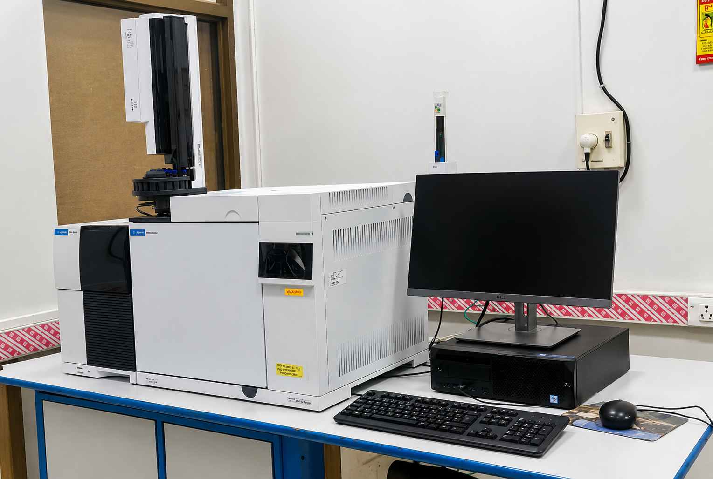

Company: Agilent
Model: 5977B
The Agilent 5977B GC/MSD is a reliable, high-sensitivity single quadrupole gas chromatography-mass spectrometry system tailored for routine, high-throughput applications. It combines efficient, intelligent GC hardware with a robust mass detector to deliver accurate identification and quantification of volatile organic compounds in environmental, food, and pharmaceutical samples.
Samples must be high purity, volatile, and thermally stable (no decomposition at ~200–300 °C). Use GC-compatible volatile solvents (hexane, DCM, ethyl acetate, acetone; methanol if suitable). Ensure samples are fully dissolved, 0.2 µm filtered, and particle-free, with typical concentrations of 0.01–1 mg/mL, submitted in 1.5–2 mL GC autosampler vials. Non-volatile or polar compounds may require derivatization (e.g., BSTFA).
Avoid non-volatile/high-boiling compounds, thermally unstable substances, salts/buffers, aqueous or unfiltered samples, and corrosive/reactive or dirty matrices (e.g., strong acids/bases, crude extracts), as they can damage the injector/column, cause blockages, or produce unreliable results.
Location of Facility:
Central Research Facility
Indian Institute of Technology Delhi
Hauz Khas, New Delhi – 110016
Prof K J Mukherjee
Central Research Facility
IIT Delhi, Hauz Khas, New Delhi – 110016
Phone: 9910645903
Email: kjmukherjee@dbeb.iitd.ac.in
Name: Anil Kumar Dahiya
Mobile number: 9958091732
Email Address: srz218427@iitd.ac.in